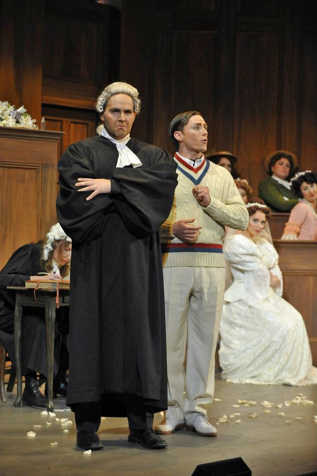
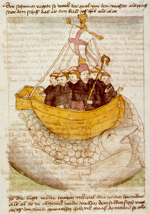

DIRECTOR -
Northside Learning Lab
ASSISTANT DIRECTOR
Haygood Harmonics Youth Ensemble
Solo Appearances
@ Haygood Memorial UMC
7/26 God Bless America, Berlin
6/26 I'll Walk with God, Brodszky
4/26 The Holy City, Adams
12/25 Messiah arias
12/25 Gesù bambino, Yon
10/25 Conductor
The Lord is My Shepherd,
Rutter
10/25 Simple Song, Bernstein
8/25 In the Garden, Miles
7/25 Lord's Prayer, Malotte
3/25 Arias from Elijah
12/24 O Holy Night, Friendly Beasts
12/24 The Prayer, Gesù bambino
7/24 Zion's Walls, Copeland
Selected Engagements
Die Zauberflöte - Tamino
Kammeroper Köln GERMANY
Bel Canto with Giulio Zappa
LAMP Nova Scotia CANADA
Don Pasquale - Ernesto
Ring Award Competition - 1st Prize
Graz AUSTRIA
Tancredi - Argirio w/ Alberto Zedda
LAMP Nova Scotia CANADA
Pirates of Penzance - Frederic
Atlanta Opera Tour
Barber of Seville - Almaviva
Boston Lyric Opera Tour
Romeo and Juliet, Cenerentola,
The Music Shop
Opera Colorado on Tour
Così fan tutte - Ferrando cover
Opera Colorado, Opera Saratoga
Principal / The Mighty Casey,
Le 66, Trial by Jury
Opera Saratoga
Conductor
Christmas at St. Dunstan's
Director / Musical Theatre Camp
Alpharetta Arts, Atlanta
Welcome to brendandaly.net.
Please check back often for news on my performing schedule, the Northside Learning Lab, and other adventures in music, language, and theatre.

Navigatio Sancti Brendani
In the sixth century, Saint Brendan the Navigator sailed the northern seas. Legend holds that he and his mission may have reached the New World, over nine centuries before Columbus.

Inspired by that adventure, I continue my own voyage of discovery into music, languages, and highly physical drama, as I strive to honor composers with the most authentic expression that I can bring to the live stage.
"Vocally, I was particularly impressed by...Brendan Daly as Lechmere in the opening scene, the one place where Britten allows us a sense of fun and joy--one could almost understand why one would want to be a soldier by seeing the pure joy Lechmere brings to brandishing a sword."
- Boston Musical Intelligencer